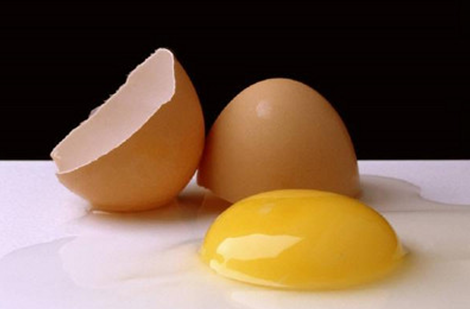
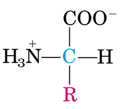
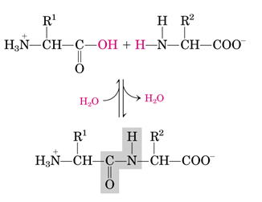
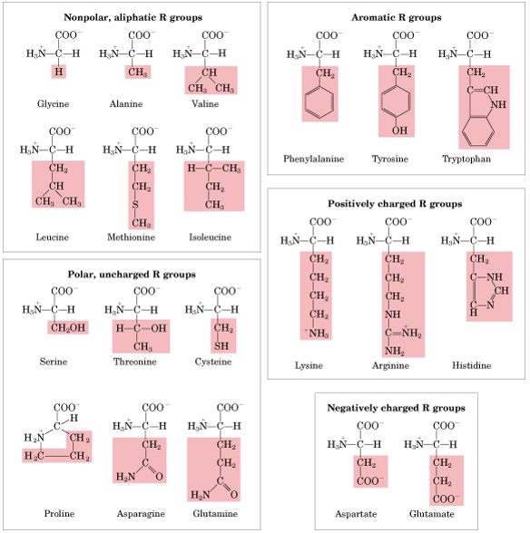
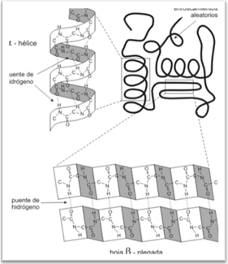
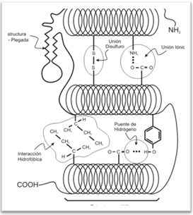

1.TÍTULO
EXTRACCIÓN DE PROTEÍNAS ALBÚMINA Y CASEÍNA.
EXTRACCIÓN DE PROTEÍNAS ALBÚMINA Y CASEÍNA.
Las palabra proteínas se deriva de la palabra griega proteicos, que significa “primero”. Hechas de aminoácidos, las proteínas brindan estructura en las membranas, constituyen cartílago y tejido conjuntivo, transportan oxígeno en la sangre y los músculos, dirigen reacciones biológicas en la forma de enzimas, defienden el cuerpo contra infecciones y controlan procesos metabólicos en la forma de hormonas. Las proteínas incluso pueden ser fuentes de energía.

Las proteínas están compuestas de bloques constructores moleculares llamados aminoácidos. Sin embargo sólo existen 20 aminoácidos que se encuentran comúnmente en las proteínas humanas. Cada aminoácido tiene un átomo de carbono central denominado carbono α, enlazado a dos grupos funcionales: un grupo amino (-NH2) y un grupo ácido carboxílico (-COOH). El carbono α también esta enlazado a un átomo de hidrógeno (-H) y a una cadena lateral llamada grupo R. El grupo R, que difiere en cada uno de los 20 aminoácidos α comunes, es el que proporciona características únicas a cada tipo de aminoácido Los aminoácidos se clasifican de acuerdo con su grupo R, lo que determina sus propiedades en disolución acuosa. Los aminoácidos no polares tienen grupos R hidrógeno, alquilo o aromático, lo que los hace hidrofóbicos (“temerosos al agua”). Cuando un aminoácido tiene un grupo R polar, interacciona con agua porque es hidrofílico (“amante del agua”). Los aminoácidos polares neutros contienen grupos hidroxilo (-OH), tiol (-SH) o amida (-CONH2).

Los aminoácidos polares ácidos contienen un grupo carboxilo (-COO-). Los aminoácidos polares básicos tienen grupos R amina. En la tabla 1 se mencionan las estructuras y los nombres comunes de los 20 aminoácidos α que se encuentran comúnmente en las proteínas, con sus grupos R.
A continuación se presenta un resumen de la clasificación de los aminoácidos.
|
Tipo de aminoácido |
Tipos de grupo R |
Polaridad |
Agua |
|
No polar |
No polar |
No polar |
Hidrofóbico |
|
Polar, neutro |
Contiene átomos de O y de S, pero no carga |
Polar |
Hodrofílico |
|
Polar, ácido |
Contiene grupos carboxilo, carga negativa |
Polar |
Hidrofílico |
|
Polar, básico |
Contiene grupos amino, carga positiva |
Polar |
Hidrofílico |
Los aminoácidos se unen entre sí por enlaces peptídicos formado por la condensación del α-COOH de un aminoácido, con el grupo α-NH2 de otro. Los polímeros de bajo peso molecular se llaman polipéptidos, mientras que el término proteína se reserva para los polímeros de peso molecular de miles de millones de daltons. Cada proteína es estructural y funcionalmente única, y depende de la secuencia de específica de aminoácidos que la conforman. Esta secuencia específica es lo que se llama estructura primaria.

Tabla 1. Estructuras, nombres de los 20 aminoácidos.

La cadena de aminoácidos se dobla y tuerce de una forma específica, con lo que da origen a una espiral (alfa hélice) una estructura al azar o una lámina plegada β. Este nivel de organización se llama estructura secundaria. La estabilidad de estas estructuras se debe a los puentes disulfuro entre dos cisteínas, a los enlaces ionicos y a los puentes de hidrógeno. También se generan atracciones hidrofóbicas por la tendencia de las cadenas laterales de los aminoácidos a asociarse entre sí.

La estructura terciaria de una proteína es arreglo en el espacio de las cadenas o, en otras palabras, la forma en tres dimensiones de la macromolécula. Muchas proteínas tienen una forma compacta, llamada proteínas globulares; otras proteínas más rígidas forman una estructura alargada, y se llaman proteínas fibrosas.
Algunas proteínas están formadas por dos o más cadenas polipeptidicas, que no están unidas por enlaces covalentes; la asociación de estas subunidades es lo que constituye la estructura cuaternaria. El ejemplo más conocido es la hemoglobina, formada por dos subunidades α y dos β.
Se han desarrollado diversos métodos para el aislamiento y la purificación de proteínas. Uno de los más sencillos es la precipitación, en el que se hacen cambios en el solvente que alteran la solubilidad de la proteína.

La precipitación de las proteínas puede ser de varios tipos:
a) Precipitación con sales.
b) Precipitación isoeléctrica
c) Precipitación con solventes.
La precipitación con sales es una de las técnicas más utilizadas; también se llama precipitación por insolubilización, por salado o salting out. Se realiza agregando altas concentraciones de sales a la solución que se encuentra la proteína para producir su precipitación.
Una descripción simplificada del mecanismo de insolubilización por salado está basada en el hecho de que la adición de las sales elimina el agua de la proteína hidratada, dejando las regiones hidrófobas (no polares) en libertad de combinarse de forma intermolecular. Aquellas proteínas que presentan mayor número de regiones hidrófobas sobre su superficie, forman agregados y se precipitan más rápidamente que las que presentan pocas regiones de este tipo. Debido a esta propiedad, hay proteínas que pueden permanecer en solución a altas concentraciones de sal.
Las sales utilizadas con mayor frecuencia son el sulfato de amonio (NH4)2SO4, sulfato de sodio, Na2SO4, sales de magnesio y fosfato. Otra técnica para precipitar proteínas se basa en la disminución de su solubilidad en el punto isoeléctrico. Las proteínas, por su naturaleza anfotérica (la presencia de un grupo funcional ácido y otro básico en su estructura) presenta carga neta negativa a pH altos y carga neta positiva a pH bajos. En estos casos, las cargas en la superficie de la proteína pueden establecer uniones-dipolo con el agua y repelerse entre sí, lo que mantiene su solubilidad.
Existe un pH llamado punto isoeléctrico, que es específico para cada proteína, en el cual la carga neta de la molécula es cero. En este pH, la interacción con el agua es mínima y el efecto de las fuerzas electrostáticas entre las moléculas de proteína es casi nulo. En estas condiciones, la solubilidad de la proteína es mínima pues las moléculas tienden a unirse y precipitarse.
En este experimento, se aislará la principal proteína de la leche y de la clara del huevo, utilizando las técnicas descritas.
La caseína es la principal proteína de la leche y se encuentra en una concentración aproximada de 35 g/l; en realidad de una mezcla heterogénea de proteínas que son abundantes en grupo fosfato. Puede purificarse fácilmente ajustando el pH a su punto isoeléctrico, que es de 4.8. Ya que la caseína es también insoluble en etanol, este puede utilizarse para eliminar los lípidos presentes en la muestra.
La ovoalbúmina también es una proteína globular de reserva, con un peso molecular de 40 000 daltons, y punto isoeléctrico de 4.6.
PROPÓSITOS
Qué el alumno obtenga ovoalbúmina de la clara de huevo por precipitación con sulfato de amonio, y caseína de leche por precipitación isoeléctrico.
Obra publicada con Licencia Creative Commons Reconocimiento Compartir igual 4.0